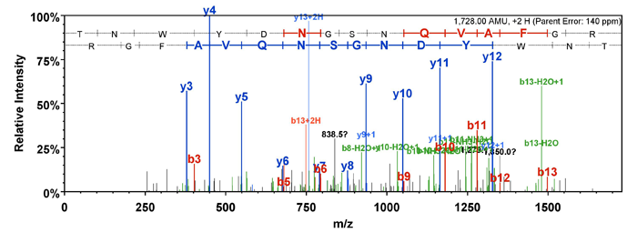
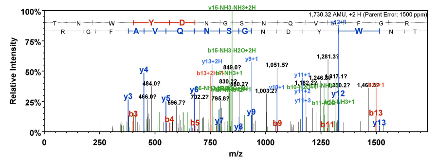

Search Score is the score assigned by the software (the search engine) that associates the spectra with the peptides.
Higher Search Scores correlate with a higher frequency of good identifications of peptides.
The Search Score metric depends upon the analysis method used when loading the standard sample. MassQC supports simple standard samples.
Simple standard samples > A common simple sample is BSA but in general simple samples have only a few proteins. For these samples, the analysis method specifies that the search engine will be OMSSA .
- Search Score is the log of the OMSSA e-value.
- The Search Score metric is the median search score for all peptides.
OMSSA has a standard threshold that all peptide to spectrum matches must pass before the peptide is considered identified.

This spectrum was given a good score by the search engine for matching to peptide TNWYDNGSNQVAFGR.

This spectrum was given a poor score by the search engine for matching to peptide TNWYDNGSNQVAFGR.
For OMSSA , the Search Score is the log of the e-value .
Higher: Good Search Scores correspond to peptides which are solidly identified.
The most reproducible LC-MS performance is when this metric remains in a narrow range over a series of runs. Wide variability in any metric means your process is not reproducible.
The Search Score tells how good the MS2 spectra are in the sense of how easily they are matched to peptides by a search engine. Low values of the Search Score may be caused by:
- Contaminants which cause chemical noise and extra non-identifiable peaks in the spectrum
- In-source decay which causes the b and y ion peaks used by search engines to fragment
- Poor fragmentation which is seen as only a few peaks in the MS2 spectrum and is perhaps caused by incorrect collision energy
Spectra with high Search Scores are easily identified by search engines because they have a good MS2 Signal to Noise , have a reasonable number of Peaks per Spectrum and the major peaks in the MS spectrum are the fragment ion peaks of the peptide.